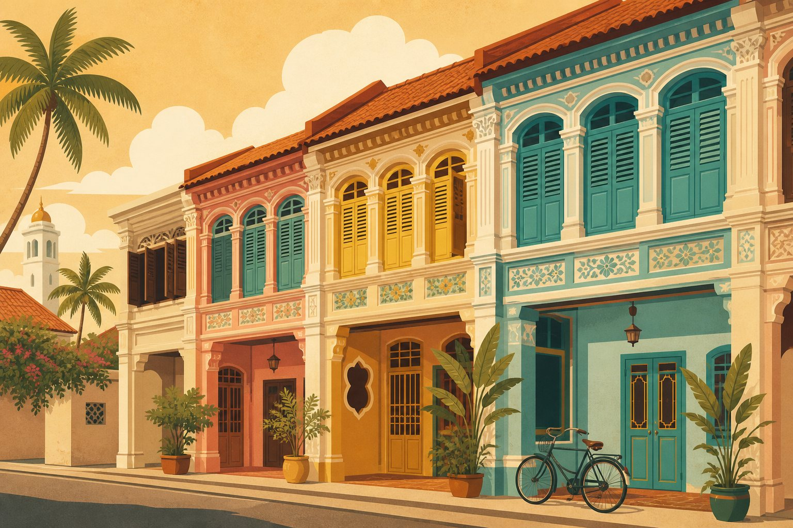
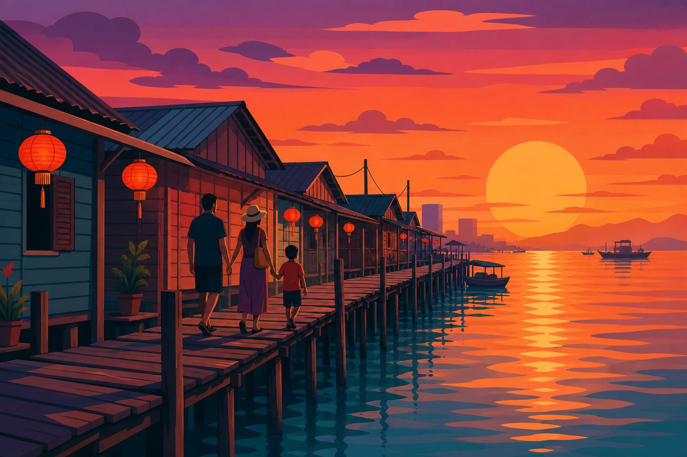
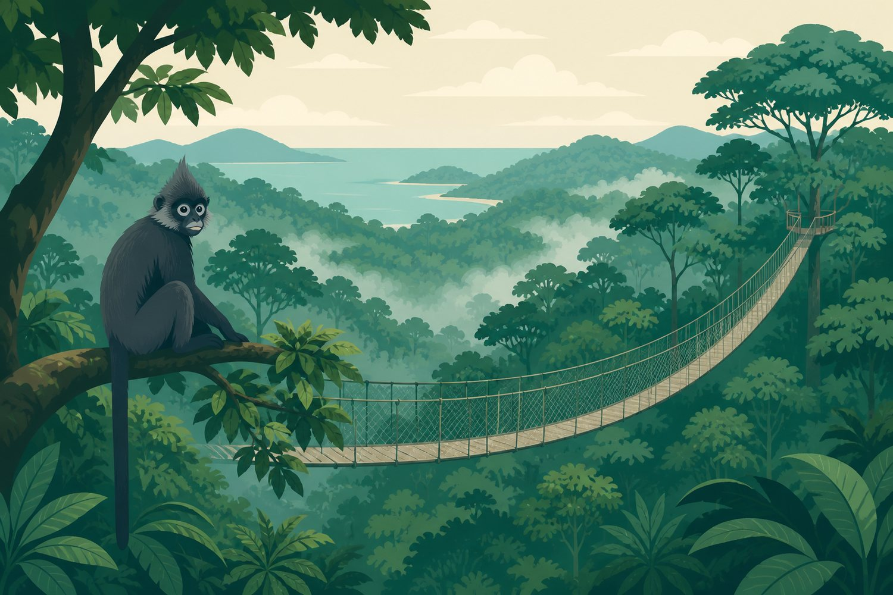
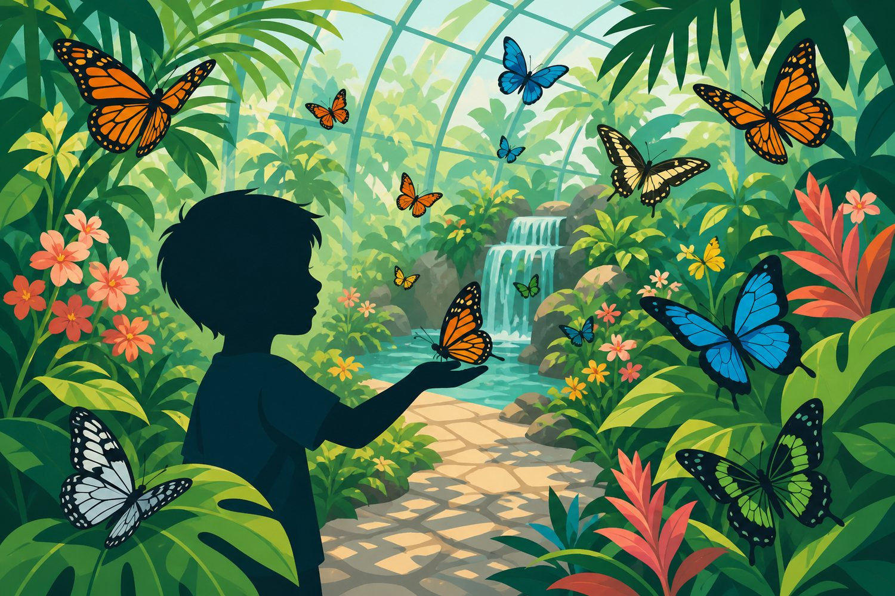
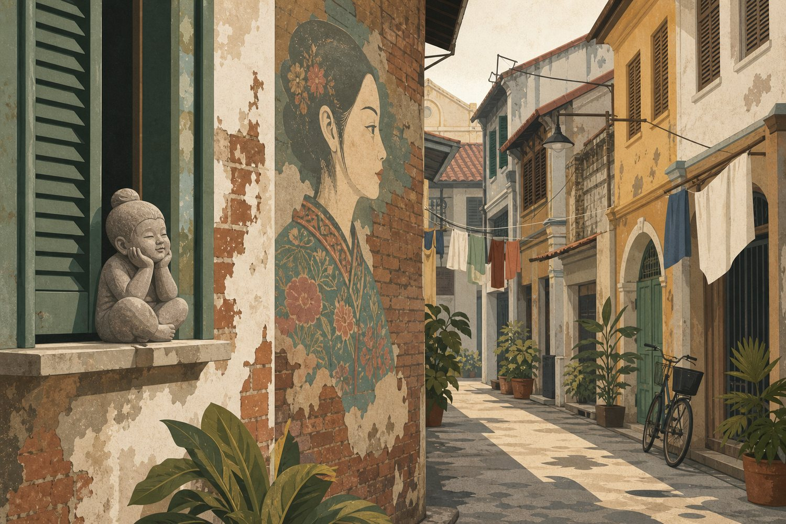
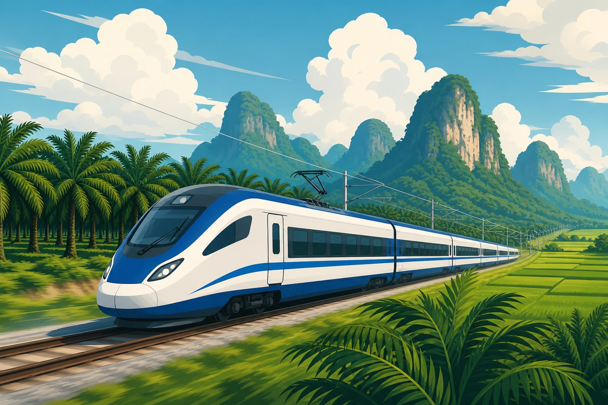
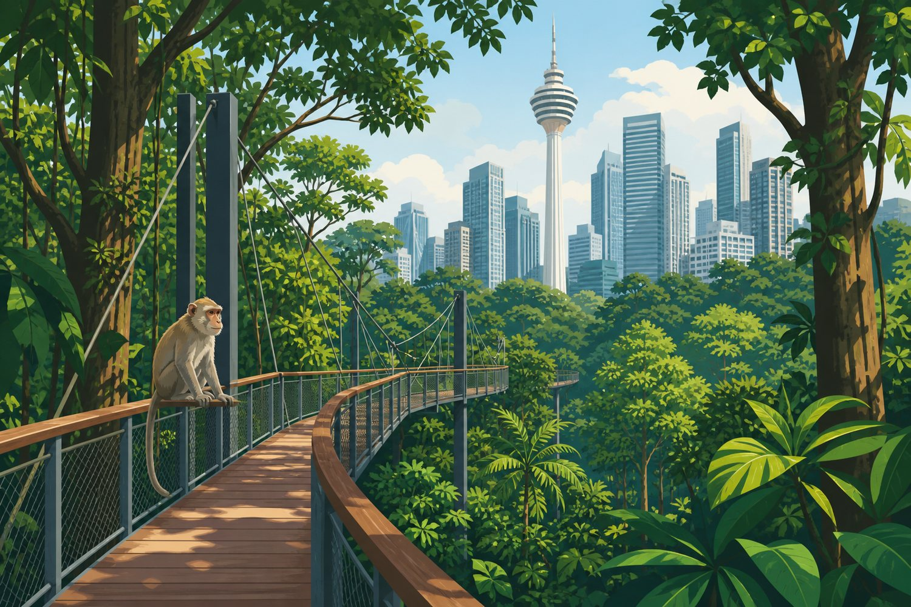
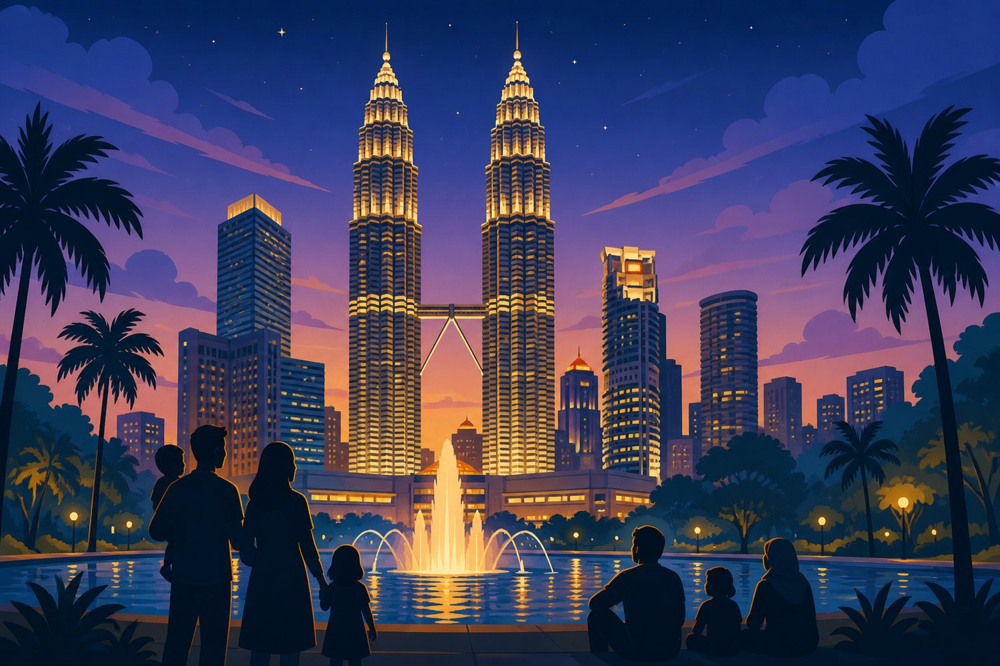
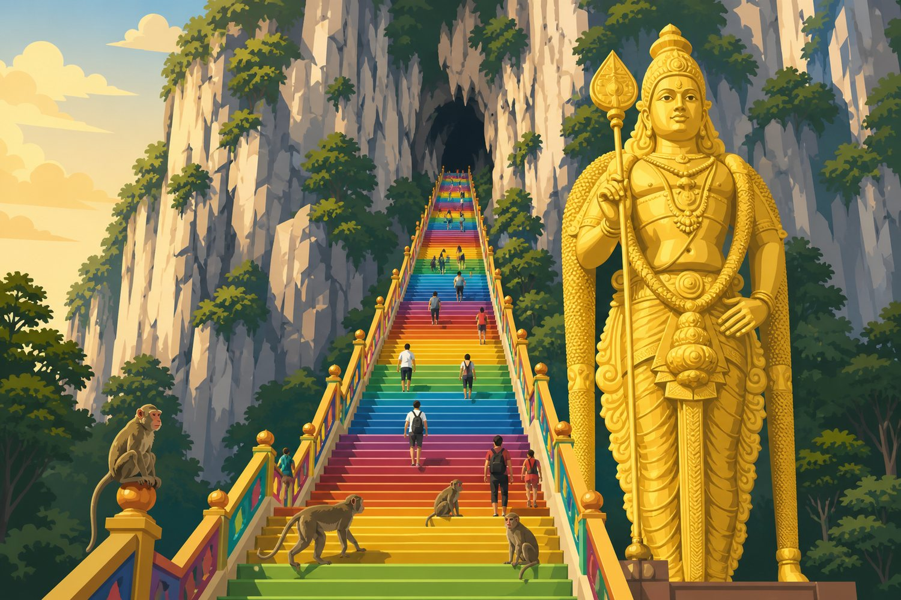
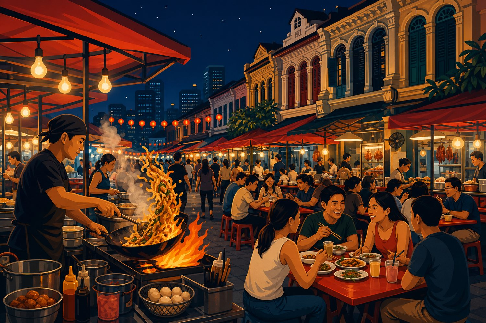

窗口原本是 9/25 到 10/7，同时覆盖中秋和国庆，中间 9/28 至 9/30 是工作日。 两头的实际报价查下来，出发日往后挪一天省 ¥1,288，返程日往前挪一天省 ¥1,790， 所以定在 9/27 走、10/3 回，两端都踩在价格洼地上。10/4 之后回国方向进入返程高峰，价格失控。
| 香港 → 槟城 UO746（三人含税） | 价格 |
|---|---|
| 9/26（六，香港中秋节翌日公众假期） | ¥6,575 |
| 9/27（日）· 采用 | ¥5,287 |
| 吉隆坡 → 深圳 深航晚班（三人含税） | 价格 |
|---|---|
| 10/2（五） | ¥2,833 |
| 10/3（六）· 采用 | ¥3,174 |
| 10/4（日） | ¥4,963 |
| 10/5（一） | 约 ¥7,070 |
| 10/6（二） | 约 ¥10,370 |
| 日期 | 班次 | 时刻 | 三人 |
|---|---|---|---|
| 9/27 | UO7002 + UO746 蛇口 → 香港机场 → 槟城 已订 | 08:45 开船 15:40 落地 | ¥5,287 |
| 9/30 | ETS Express EX9109 北海 → KL Sentral | 13:05 发 16:40 到 | 约 ¥357 |
| 10/3 | 深航 ZH330 吉隆坡 → 深圳宝安 T3 | 19:45 起飞 23:55 落地 | ¥3,015 |
总预算 ¥17,900–21,900，明细见第 12 页「订票清单与预算」。 行李全程零成本：去程联运含 60 kg，回程深航含 69 kg。
这张表是整份行程里最该反复看的部分。表外的所有环节都可以浮动。
| 项目 | 约束 |
|---|---|
| 蛇口预办登机柜台 | 9/27 07:45 前到，船 08:45 开 |
| 槟榔律驰名叻沙 | 09:00–17:30，周三公休，所以放在 9/29 |
| Entopia 蝴蝶园 | 09:00–18:00，17:00 停止入场 |
| 侨生博物馆 | 17:00 停止入场 |
| 汕头街夜市 | 17:00 后开摊，热门摊 21:30 前卖完 |
| ETS EX9109 | 9/30 13:05 发车，提前 40 分钟到北海站 |
| KL Forest Eco Park | 08:00–17:30，最后入场 16:30，周五闭园，只收现金 |
| Petrosains 科学馆 | 平日 09:30–17:30，最后入场 16:00；每月第一、三个周一闭馆 |
| 双子塔观景台 | 周二–周日 09:00–22:30；周一只在第 2/4/5 个周一开 |
| Aquaria KLCC | 10:00–20:00，19:00 停止入场；喂食 12:30 / 15:30 |
| 黑风洞 | 07:00–21:00；10:00 后旅游团涌入，15:00 后重新清静 |
| 铭记肉骨茶 | 10:30–15:00 / 18:00–21:00，周二公休 |
| 升旗山缆车 | 06:30–23:00；06:30–08:00 是本地人特价时段，人最多，别赶头班 |
| KLIA 值机 | 10/3 16:00 前到机场 |
全程按「最早 9 点起」排。人潮不是靠早起躲，是靠升旗山快速通道票和把黑风洞挪到下午化解的。 最早的一天是 9/29 的 9:00，其余都可以自然醒。

Gurney Drive 是海边的大型熟食中心，一个屋檐下品种最全，第一次来最好上手：炒粿条、福建虾面、罗惹、蚝煎、煎蕊一次扫齐。 19:00 到 22:00 最挤，早点去占位。大部分摊位清真，含猪肉的在标示专区。收现金和 DuitNow QR。
第一天不排任何门票项目，落地就是傍晚，留给孩子缓冲。随心飞票种含 20 kg 托运， 但手提只有一件 7 kg 随身物品，不含登机拉杆箱，闸口被拦是 HKD 800 一件。

官方提醒 06:30 到 08:00 是马来西亚公民的日出特价时段，那会儿本地人反而最多。 8 点之后到更清静，加上 Fast Lane 票，10:30 出发完全来得及。
New Lane 是本地人真正吃的那条街，18:00 开摊，队比 Gurney 短。炒粿条、福建虾面、蚝煎都是一流。 炒粿条传统用猪油和血蚶，不吃血蚶就说 “no cockles”。


除了那幅被拍烂的《姐弟共骑》，重点找西班牙雕塑家 Isaac Cordal 的水泥小人（Cement Eclipses 系列）—— 15 厘米高的小人像藏在窗台、墙角和支架上，散落整片老城，本身就是一场寻宝游戏。 孤独星球对那幅网红壁画的评价是「或许有点过头了」，反而力荐这批小人。给孩子做成打卡地图，这个年纪最吃这套。
78 号的超级天皇鸡脚粿条汤是米其林必比登，要排十五分钟；隔壁天天利茶室是炭火炒粿条。 四大天王里的权记山楂饮料正好解腻。想吃一顿正经娘惹菜：Auntie Gaik Lean's Old School Eatery 是槟城仅有的两家米其林一星之一，Bibik's Kitchen、Sifu 是必比登级别，都要提前订位。

Gold 车次（EG9343，07:50 发）便宜约 ¥114，但要 06:45 出门。多花一百来块换一个完整的槟城上午，划算。
槟榔律驰名叻沙每周三公休，所以那碗已经在昨天吃掉了。


KL Forest Eco Park 每周五闭园，所以必须放在今天；而且只收现金、无法网上订票，出门前备好零钱。 外国人成人 RM40、儿童 RM5。
孤独星球在「吉隆坡最值得做的九件事」里唯一点名的摊，招牌是炭烤鸡翅。点单说 “tak pedas” 就是不要辣。

旅游巴士 10:00 开始涌入，15:00 后车都走了、太阳也没那么毒，这是官方攻略和清早并列推荐的时段。 黑风洞开到 21:00，完全不用赶。把这天最难起的理由消掉了。
下午本地穆斯林做礼拜，市区交通会堵，所以上午安排室内的水族馆，下午再往城外走。

午夜出关大约凌晨零点半到一点，这个点机场打车要排队。10/4 到 10/7 还都是假期，第二天睡到几点都行。
结合孤独星球和米其林必比登。槟城名摊按时段开，很多中午前就卖完。
| 菜 | 去处 | 备注 |
|---|---|---|
| 亚参叻沙 | 槟榔律驰名叻沙 | 米其林必比登，周三休 |
| 潮州煎蕊 | 槟榔律驰名潮州煎蕊 | 叻沙店隔壁，1930 年代原版，RM4.50 |
| 鸡脚粿条汤 | 超级天皇（78 Lebuh Kimberley） | 米其林必比登，排 15 分钟 |
| 炭火炒粿条 | 天天利 / New Lane / Gurney Drive | 不吃血蚶说 “no cockles” |
| 福建虾面 | New Lane、Gurney Drive | 虾汤底，不加辣椒酱就不辣 |
| 蚝煎 | New Lane | |
| Roti bakar | Roti Bakar Hutton Lane | 配半生熟蛋，两人 RM9 |
| 娘惹菜 | Auntie Gaik Lean's / Bibik's Kitchen / Sifu | 米其林一星 / 必比登，需订位 |
| 娘惹糕 | Moh Teng Pheow | 米其林必比登 |
| 菜 | 去处 | 备注 |
|---|---|---|
| 海南鸡饭 | 新驰名鸡饭（武吉免登） | 1965 年，米其林必比登，不辣 |
| 烤鸡翅 | 黄亚华小食店（亚罗街） | 孤独星球点名 |
| 香蕉叶饭 | Sri Nirwana Maju | 本地人用手抓着吃 |
| 肉骨茶 | 铭记（Pudu）/ 兴记（甲洞） | 药膳味，不辣，兴记是必比登 |
| 福建面、炒粿条 | Lot 10 Hutong 美食村 | 商场地下，冷气 |
| 蛤蜊米粉 | Lai Foong（茨厂街） | |
| 肉干 bak kwa | 茨厂街 | 手信 |
| 椰浆饭、叻沙 | Madam Kwan's | 商场里，最后一顿方便 |
不吃辣的话这些都安全：煎蕊、海南鸡饭、烤鸡翅、肉骨茶、福建虾面（不加辣椒酱）、蚝煎、roti canai、娘惹糕。 炒粿条点单说不要辣。亚参叻沙是酸辣的，先让他尝一口再决定要不要单点一碗。
| # | 项目 | 说明 |
|---|---|---|
| 1 | 回程 ZH330 | 唯一还在浮动的大额项目，越晚越贵，优先锁定 |
| 2 | ETS 火车 EX9109 | KTMB 官网或 App，Flexi Fare 动态定价，越早越便宜，记得选儿童票 |
| 3 | 住宿 | 乔治市 3 晚 + 吉隆坡 3 晚 |
| 4 | 双子塔观景台 | 按场次售票，旺季易售罄 |
| 5 | 升旗山缆车 Fast Lane | 官网可订，须提前一天 |
| 6 | Petrosains | 官网提前订 |
| 7 | The Habitat | 提前 7 天以上官网订有九折 |
| 8 | Entopia、Aquaria | 可提前买 |
| 9 | MDAC 数字入境卡 | imigresen-online.imi.gov.my/mdac，免费，三人各一份，注意避开收费假网站 |
KL Forest Eco Park 不能网上订，现场付现金。去程机票已订，不用再动。
| 去程 蛇口→槟城（已订） | ¥5,287 |
| 回程 ZH330 | ¥3,015 |
| 城际交通 + 机场接驳 | ¥700–900 |
| 住宿 6 晚 | ¥3,500–5,500 |
| 门票 | ¥2,100–2,500 |
| 餐饮 | ¥2,500–3,500 |
| 市内 Grab | ¥800–1,200 |
| 合计 | ¥17,900–21,900 |
| 升旗山缆车 Fast Lane 往返（RM200） | ¥320 |
| The Habitat（约 RM150） | ¥240 |
| Entopia | ¥320 |
| Aquaria KLCC（RM225） | ¥360 |
| Petrosains 平日（RM126） | ¥202 |
| KL Forest Eco Park（RM85，现金） | ¥136 |
| 双子塔观景台 | ¥480–800 |
| 黑风洞、极乐寺 | 免费 / RM10 |
| 签证 | 中马已互免。普通护照单次停留 30 天内免签，180 天内累计不超过 90 天，护照有效期需 6 个月以上。入境前必须在线填 MDAC。 |
| 时差 | 没有，两地同为 UTC+8，带孩子不用倒时差。 |
| 插头 | 英标三孔（Type G），240 V，带转换头。 |
| 打车 | 全程 Grab，有中文界面。乔治市内一趟 RM7–20。 |
| 现金 | KL Forest Eco Park 只收现金；槟城跨海渡轮反过来只收卡不收现金，有游客反馈银联刷不过，带一张感应式 Visa 或 Mastercard。 |
| 天气 | 西海岸午后雷阵雨为主，上午基本晴。孤独星球提到槟城最湿的月份是 10 月和 11 月，我们正好卡在雨季之前。阵雨很少超过一小时。 |
| 烟霾 | 2026 年是强厄尔尼诺年，9 至 11 月跨境烟霾风险偏高。带 N95，出发前查 apims.doe.gov.my。 |
| 着装 | 黑风洞和极乐寺需过膝。 |
记下来避免后续反复讨论。以后再想起这些地方，翻一眼就知道当初为什么否掉了。
槟城到兰卡威的直达渡轮疫情后已停运至今，网上还在流传的「乔治市三小时船到瓜镇」是过期信息。 现在只能飞 40 分钟，或陆路绕瓜拉吉打约 4 到 5 小时。七天里塞三个地方会变成赶场。
主体是水上乐园，不玩水的话性价比垮掉。外国人日票成人 RM160、儿童 RM140， 夜间温泉票另算成人 RM130、儿童 RM105，日夜不是一张票。 怡保剩下的看点是极乐洞、霹雳洞、三宝洞几个石灰岩洞庙，和行程里已有的极乐寺、黑风洞高度重复—— 对大人是不同风味，对 10 岁孩子基本是同一件事看三遍。
孤独星球的「吉隆坡最值得做的九件事」里完全没有它。 Genting SkyWorlds 外国人网购 RM168，而且「儿童票」按身高 90 至 110 厘米定义， 10 岁要买成人票，三人加缆车约 ¥900，还要搭两小时车程。 同样的钱在市区能玩树冠步道加科学馆，还有找。
航班时刻库里有这一班，但实时查询里 10 月上旬并不存在。 同日深航更便宜，而且含 23 kg 行李，亚航标准票一公斤免费托运都没有。
见第二页的价格表，两头各贵一千多。请假天数是固定的三天，与出发日无关， 所以「多出来的那天」只能拿钱衡量，而它的边际价值不高。
本册插图为 AI 绘制的示意图，用于快速识别地点氛围，不是实景照片。